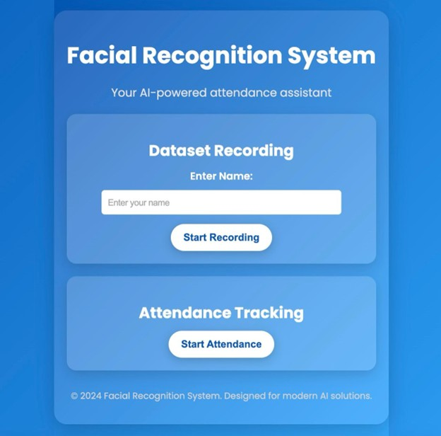

An innovative solution leveraging computer vision and machine learning for automated attendance tracking in educational environments.
Developed an intelligent attendance tracking system that utilizes advanced computer vision techniques to automate the attendance process. This collaborative project demonstrates the practical application of AI in educational settings, significantly reducing administrative workload while maintaining high accuracy.
View on GitHub
Advanced face detection using OpenCV for instant attendance marking with high accuracy.
Efficient data handling and storage using Pandas for organized attendance records.
Visual analytics and reporting tools built with Matplotlib for attendance insights.
Streamlined process that reduces manual effort and human error in attendance marking.
The system employs a sophisticated pipeline for face detection and recognition: